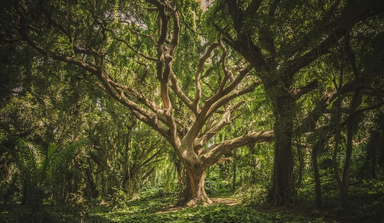

Earth is an element feminine and receptive; it carries a materialist, concrete and static essence that left feelings and prioritizes our reality.
The wind of this element is North, because, second the old civilizations, when more they went to North, colder it was (and more mountains there were, too). That said, the Season is Winter – the time which all nature is hiding and dying. The period coldest of the day is the wee hours, so Earth is associated with midnight. Moreover, the colors that represent are greens and brown tons (predominantly darks).
Because it is something palpable, it transmits stability. Earth is connected with other elements: water, air, and fire (and with our Earth Mom, too, featuring its fertility and germination power).
Plant to reap; feel the smell and solidness of Earth because it’s so strong, like our bones and tendons, and sensitive as our touch.
They are elementals of Earth who take care and feed it. The large variety of plants and stones have derived his knowledge. These souls are very funnies and cheerful, but this doesn’t mean that they aren’t surly sometimes. Moreover, they may find in forests, caves, meadows, and our kitchens.
These magickal spirits help us to keep the stability, determination, and physical feeling’s straight. The unbalanced proportion of them in our body might cause incredulous feelings, end of our imagination, and loss of clarity to go to the unreal world.
You may connect with gnomes and leprechauns through nature, ground, plants, and crystals/stones. Besides, they love sweet and natural foods, like berries and honey.
| key words | stability, money, responsibility, fertility, nature, strength |
| colors | green, brown, white, black |
| direction | north |
| time | midnight |
| season | winter |
| tools | plants, crystals, stones, pentacle |
| astrology | Taurus, Virgos, Capricorn and Saturn |
| herbs | magnolia, sage, cedar, cypress, patchouli |
| crystals/stones | tourmaline, salt, azurite, amethyst, bedrock |
Pay attention! All content is based on my studies and particular positioning (of a beginner witch), so you must not be locked only it; search in different websites and books, make your own path.